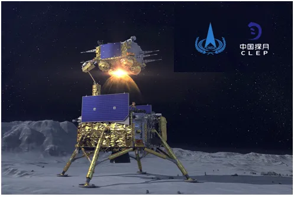

Czy Lord Vader okaże się Chińczykiem ?
Artemis to nowy załogowy program misji księżycowych USA. Start pierwszej, jeszcze bezzałogowej wyprawy został już wielokrotnie przełożony. Dla Amerykanów to prestiżowe wyzwanie, bo w kosmicznym wyścigu Chiny wydają się ich wyprzedzać. Jeśli jak planują w 2025 na Księżycu staną znów ludzie będą mieli powód do dumy. Chiny nie mają odpowiednio dużej rakiety, aby wysłać ludzi, ale już od lat wysyłają na srebrny glob roboty, które badają skały i ściągają na Ziemię próbki. Wszyscy mają jeden cel: sprowadzać z Księżyca hel 3. Izotop ten na Ziemi występuje w znikomych ilościach, jest go jednak dużo na Księżycu i to głównie po tamtej stronie, której z Ziemi nigdy nie widzimy. Kosmos w 23% wagowo składa się z helu.
Izotop ten będzie paliwem przyszłości, jest 10.krotnie bardziej wydajny niż tradycyjne paliwa jądrowe a w reakcjach nie ma żadnych toksycznych odpadów, ideał! Hel to drugi w tablicy Mendelejewa pierwiastek z dwoma protonami i dwoma neutronami, w wersji hel 3 neutronów w atomie jest tylko jedna sztuka.
Zrobotyzowany świat będzie potrzebował energii, potężna energia jest też potrzebna, aby władać bronią przyszłości: laserami, działami elektromagnetycznymi i kierunkowymi wiązkami podczerwieni i mikrofal. Już dziś są projekty przesyłania wiązkami mikrofal energii pozyskanej w Kosmosie. Łatwo sobie wyobrazić, że gdy taką wiązkę skierujmy nie do stacji odbiorczej tylko na wrogie nam miasto to usmażymy to miasto w kilka minut jak hamburgera w mikrofalowej kuchence.

Nie istnieją żadne prawne regulacje o eksploatacji Księżyca, więc możemy się spodziewać różnych sytuacji. Oba mocarstwa będą robić, co mogą, aby utrudnić pracę konkurencji. "Gwiezdne Wojny" trafią do realu, ale nie będą tak spektakularne jak filmowa wersja. Spodziewam się bardziej sabotażu, celowych zakłóceń w komunikacji w Kosmosie, itp.
Program Artemis to coś więcej niż powtórka programu Apollo sprzed 50 lat. Nowością będzie spora stacja kosmiczna orbitująca na stale wokół Księżyca, będzie ona stacją przesiadkową dla kolejnych wypraw. Muszę dodać, że swoją sondę na Księżyc w przyszłym roku, na stulecie republiki, chcą wysłać Turcy. Biznes będzie bardzo opłacalny i się rozwinie. Turcy obecnie mają najwydajniejsze rakiety licząc relacje miedzy silą ciągu a masą własną, idealna oferta dla kosmicznego górnictwa. Zatem zerkajmy na Księżyc w nadziei na mniejsze rachunki za prąd dla naszych dzieci.
Paweł Klimczewski